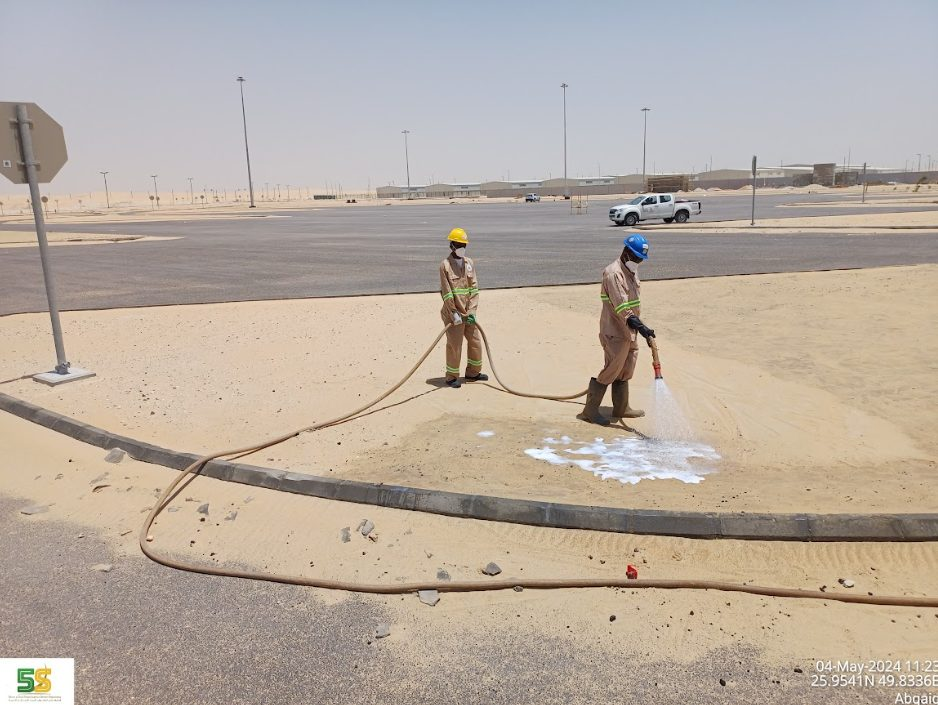
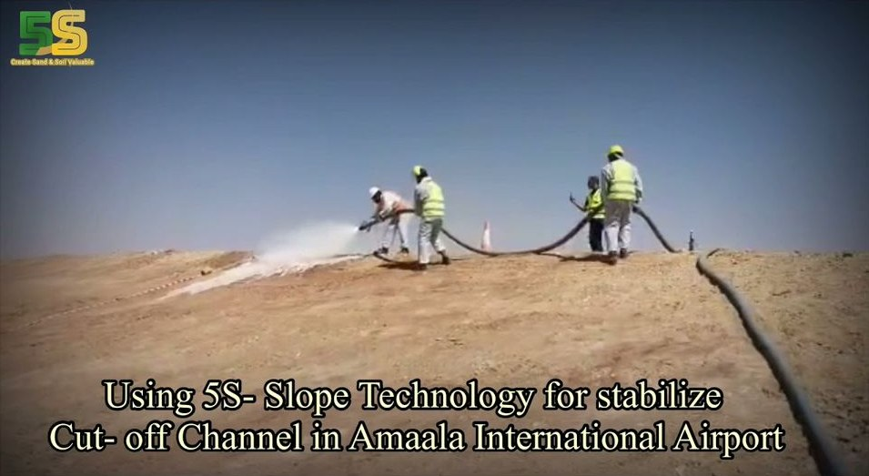
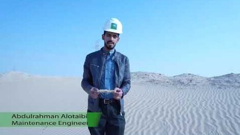

جهات تثق بأرضنا الصلبة
من نحن
الرمال ليست قدرًا…
بل مورد ننتظر استثماره
فايف إس شركة سعودية متخصصة في حلول ومواد تثبيت الرمال والتربة. نجمع تقنية عالمية مع تصنيع محلي، ونقدم منظومة متكاملة تبدأ بفحص التربة في مختبرنا وتنتهي بسطح ثابت يدوم لسنوات. نعمل لنكون شريكًا في تحقيق رؤية المملكة 2030. معًا نطوّر ونبني.

حلولنا
اختر تحديك… ولدينا التقنية المناسبة
خمس تقنيات متخصصة، لكل منها استخدام واضح ونتائج قابلة للقياس.
5S BERM
سواتر ترابية ورملية تصمد… لتحمي ما خلفها
السيطرة على الكثبان والرمال المتحركة، وحماية الطرق السريعة وخطوط الأنابيب والسكك الحديدية من زحفها.
5S ROAD
طرق ترابية بصلابة تقارب الخرسانة… دون تكلفة الأسفلت.
طرق ترابية ومؤقتة وتحسين القاعدة الفرعية للطرق الأسفلتية، تتحمل المرور المتكرر للشاحنات الثقيلة.
5S SLOPE
منحدرات ثابتة وقنوات مياه آمنة… دون خرسانة
حماية جوانب الطرق والمنحدرات من التعرية والانجراف بفعل المياه والرياح.
5S DUST
بيئة عمل بلا غبار… بتطبيق واحد بدل الرش اليومي
الحد من تطاير الأتربة في حقول النفط والمناجم ومحطات الطاقة الشمسية ومواقع الإنشاءات.
5S WALK
ممرات متينة تحافظ على جمال المكان الطبيعي
تثبيت الممرات والمسارات في الحدائق والمخيمات والمناطق الترفيهية بمظهر طبيعي.
كيف تعمل تقنية 5S؟
من الفحص إلى سطح ثابت في أربع خطوات
- 01
فحص التربة
نحلل قوة التربة في مختبرنا الداخلي قبل البدء.
- 02
الخلط بالماء
تُخلط المادة المائية الأساس بالماء، ويمكن استخدام صهريج المياه الواقف.
- 03
الرش أو الدمج
تخترق المادة جزيئات الرمال والتربة وتغلّفها.
- 04
تماسك يدوم
سطح متماسك مقاوم للرياح والماء والحرارة، عديم اللون والرائحة.
القطاعات
حلول تخدم تسعة قطاعات حيوية

قطاع النقل والمواصلات
طرق ترابية، قواعد فرعية، حماية السكك الحديدية

قطاع النفط والغاز
منصات الحفر، حماية الأنابيب، مكافحة الغبار

القطاع العسكري
طرق إمداد، مدارج، منصات هبوط

قطاع الطيران
مدارج الطائرات والطائرات العمودية

قطاع التعدين
طرق المناجم ومقاومة غبار المخلفات

قطاع مواقع الإنشاءات
تحكم في الغبار وترشيد المياه
قطاع الطاقة المتجددة
حماية الألواح الشمسية من الغبار
قطاع الزراعة
طرق ترابية، خزانات وسدود
قطاع السياحة والترفيه والتراث
ممرات، مهرجانات، مسارات سباق الخيل
المشاريع المنجزة
مشاريع تتحدث بالأرقام
مدينة الملك سلمان للطاقة
توريد وتطبيق تقنية التحكم في الغبار بمعالجة الطبقة السطحية.
تفاصيل المشروعالبلدة القديمة
توريد وتطبيق تقنية 5S Walk لتثبيت الممشى الرئيسي بالبلدة القديمة.
تفاصيل المشروعطريق خدمة المنطقة الصناعية
تثبيت طريق خدمة ترابي بطول 12 كم باستخدام تربة الموقع وتقنية 5S ROAD بدل الركام المستورد.
تفاصيل المشروعلماذا 5S ؟
تقنية عالمية بإنتاج محلي
- آمنة 100% على الإنسان والنبات والحيوان
- مقاومة للأشعة فوق البنفسجية والحرارة
- مائية الأساس وغير قابلة للاشتعال
- تقلل مصاريف الإنشاء والصيانة
- شحن سهل في حاويات IBC أو خزانات ISO
- فريق يجمع الخبرة العلمية والعملية
كلمة الرئيس التنفيذي
منذ تأسيس فايف إس آمنّا بأن الرمال التي تملأ أرضنا يمكن أن تكون أساسًا للتنمية لا عائقًا أمامها. ومع رؤية 2030 التزمنا بتقديم بدائل محلية تجمع الكفاءة والاستدامة وانخفاض التكلفة.
الرئيس التنفيذي — فايف إس
لديك مشروع في بيئة
رملية؟
تحدث إلى مهندسينا، ونحدد معك التقنية المناسبة والكمية والتكلفة.